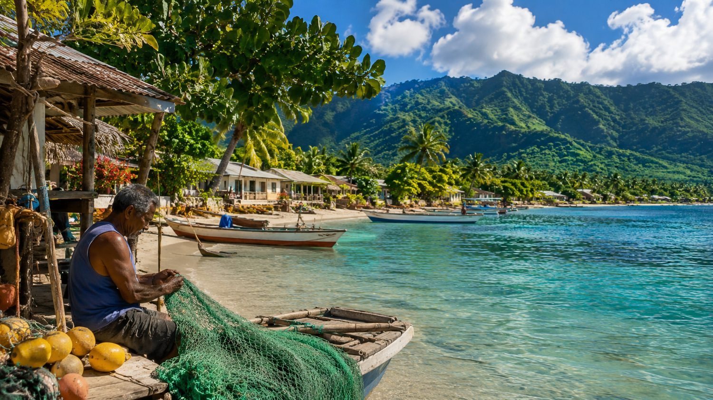
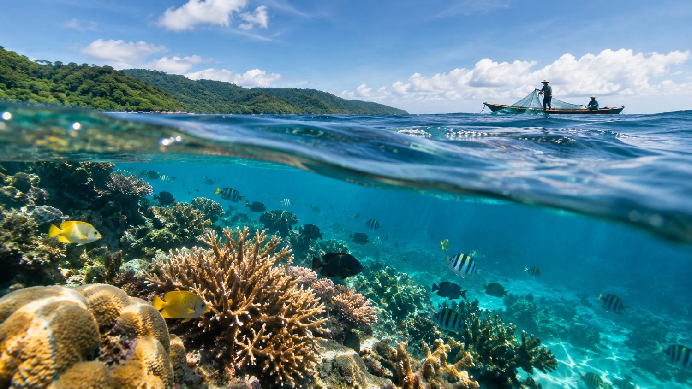

Better Nets.
Better Oceans.
Better Future.
Discover TARACORD, a Peruvian fishing-net concept exploring a treatment inspired by natural tara tannins, designed with Samoa's artisanal fisheries in mind.
Discover Our Product →Our Story →Connecting Peruvian resources with Pacific fishing communities.
TARACORD is a Peruvian academic business concept developing a fishing-net proposal inspired by tannins from the tara plant. Our vision is to explore responsible innovation for artisanal fisheries in Samoa.
Mission: Explore fishing-net solutions that respond to local fishing needs and responsible production principles.
Vision: Build a research-led bridge between Peru and Pacific island fisheries.


TARACORD Fishing Net
A proposed fishing-net product for artisanal fisheries, exploring the application of tannins derived from Peruvian tara.
Net materials, mesh dimensions, strength, treatment methods, durability and environmental performance remain subject to technical validation.
Ask About the Concept →Visual is a conceptual mockup, not a certified commercial product.
Explore our fishing-net concept.
Conceptual visualizations of the proposed TARACORD net and tara-inspired innovation. These are not photographs of a manufactured or tested product.

Product concept
Fishing net and tara inspiration.

Artisanal context
Visualization of a possible use environment.

Mesh details
Illustrative structure, not validated specifications.
The inspiration: Peruvian tara.
Tara (Caesalpinia spinosa) is a Peruvian botanical resource known for its tannin content. TARACORD proposes investigating how tara-derived compounds could be applied to fishing nets.
Potential advantages are research hypotheses, not demonstrated product performance.


A commitment to explore responsible fishing innovation.
TARACORD's development goals align with three UN Sustainable Development Goals. Any real-world impact would require testing and measurement.
Two Pacific shores. One shared vision.
Our proposed commercial pathway connects the development of TARACORD in Peru with a potential distributor in Samoa. Export logistics and market entry arrangements are part of the business plan.
Explore Partnership →
Meet the people behind TARACORD.
Six team members developing the TARACORD business concept. Individual job titles and photographs can be added after confirmation.
Let's connect.
Interested in our concept or potential distribution in Samoa? Send us a message.
Follow TARACORD
Facebook: Tara Cord Proyect — official page link pending confirmation.